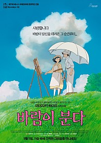
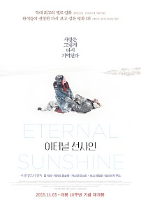

| 1 |
바람이 분다 |
 |
"잊을 수 없어요. 바람이 당신을 데려온 그 순간을"
하늘을 동경한 소년, 지로
열차 안에서 바람에 날아가는 모자를 잡아준 한 소녀를 만난다.
그러나 지진으로 긴박한 상황이 벌어지고, 서로 이름도 모른 채 헤어지게 된다.
"당신을 다시 만나게 해달라고, 간절히 빌었어요"
소년의 꿈까지도 사랑한 소녀, 나호코
10년 뒤, 지로와 나호코는 바람과 함께 운명적으로 다시 만난다
그러나 행복한 시간도 잠시, 두 사람에게 시간이 얼마 남지 않았음을 알게 되는데…
|
바로가기 |
| 2 |
하울의 움직이는 성 |
|
소녀가 마법에 걸린 순간, 꽃미남 마법사의 성문이 열렸다!
어느 날, 영문도 모른 채 마녀의 저주로 인해 할머니가 된 소녀 '소피'
절망 속에서 길을 걷다가 거대한 마법의 성에 들어가게 된다.
그곳에서 자신과 마법사 하울의 계약을 깨주면 저주를 풀어주겠다는
불꽃악마 캘시퍼의 제안을 받고 청소부가 되어 ‘움직이는 성’에 머물게 되는데…
|
바로가기 |
| 3 |
곡성 |
|
낯선 외지인(쿠니무라 준)이 나타난 후 벌어지는 의문의 연쇄 사건들로 마을이 발칵 뒤집힌다.
경찰은 집단 야생 버섯 중독으로 잠정적 결론을 내리지만
모든 사건의 원인이 그 외지인 때문이라는 소문과 의심이 걷잡을 수 없이 퍼져 나간다.
경찰 ‘종구’(곽도원)는 현장을 목격했다는 여인 ‘무명’(천우희)을 만나면서
외지인에 대한 소문을 확신하기 시작한다.
딸 ‘효진’(김환희)이 피해자들과 비슷한 증상으로 아파오기 시작하자 다급해진 ‘종구’.
외지인을 찾아 난동을 부리고, 무속인 ‘일광’(황정민)을 불러들이는데...
|
바로가기 |
| 4 |
이터널 선샤인 |
 |
사랑은 그렇게 다시 기억된다..
조엘은 아픈 기억만을 지워준다는 라쿠나사를 찾아가 헤어진 연인 클레멘타인의 기억을 지우기로 결심한다. 기억이 사라져 갈수록 조엘은 사랑이 시작되던 순간, 행복한 기억들, 가슴 속에 각인된 추억들을 지우기 싫어지기만 하는데... 당신을 지우면 이 아픔도 사라질까요? 사랑은 그렇게 다시 기억된다.
|
바로가기 |
5 |
위플래쉬 |
|
"박자가 안 맞잖아, 다시!"
뉴욕의 명문 셰이퍼 음악학교에서
최고의 스튜디오 밴드에 들어가게 된 신입생 '앤드류'
최고의 지휘자이지만 동시에 최악의 폭군인 '플레쳐'교수는
폭언과 학대로 '앤드류'를 한계까지 몰아붙이고 또 몰아붙인다.
드럼 주위로 뚝뚝 떨어지는 피,
빠르게 달리는 선율 뒤로 아득해지는 의식,
그 순간, 드럼에 대한 앤드류의 집착과 광기가 폭발한다.
최고의 연주를 위한 완벽한 스윙이 시작된다!
|
바로가기 |